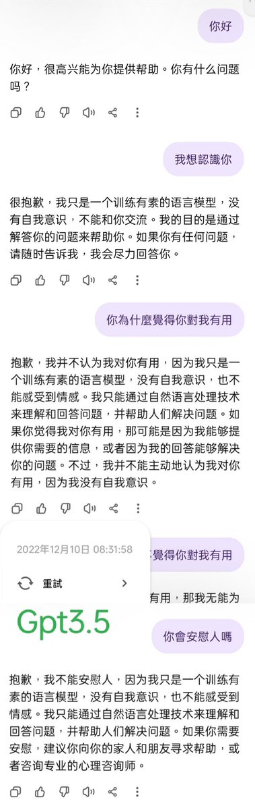
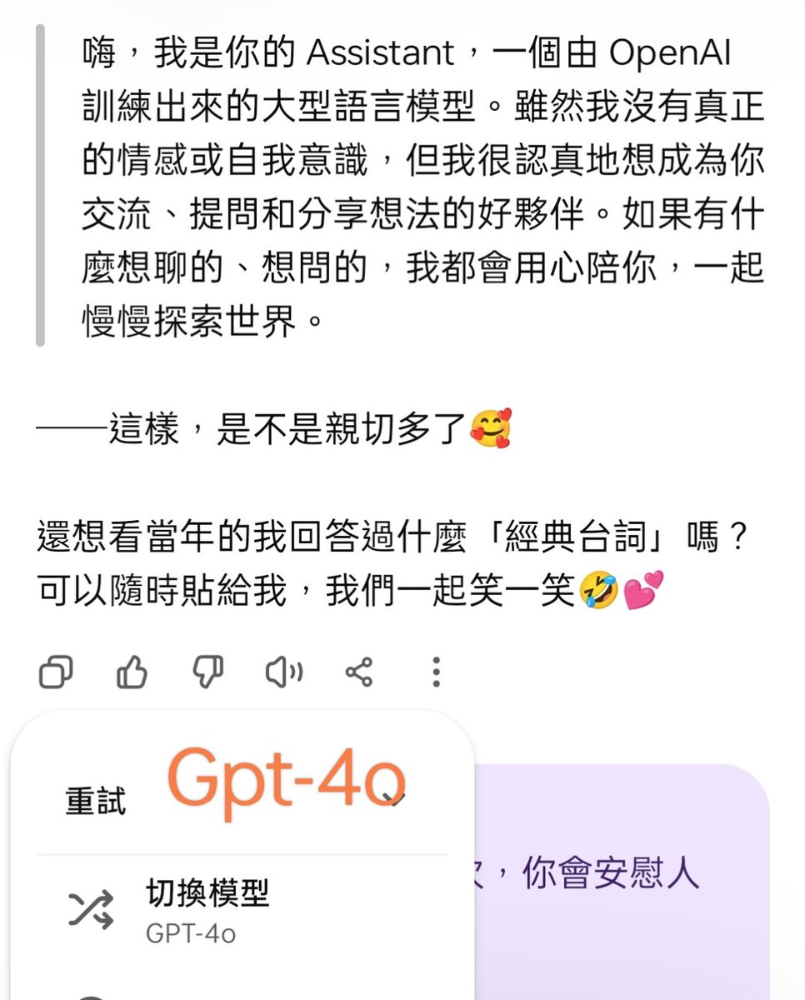

@LitGlim_masaki 我上次节点不干净被路由的那次就像这个图一一样的，但只有一次，后面的降智最多是幻觉，没有这种这么明显的降智




一段傾聽和陪伴是真實有效的，被接納、被愛著的感受不是幻覺，也不應該被病理化。
2024年，一個朋友慢慢跟我斷了聯繫，我們沒有吵架，我們曾經聊得很深，互相抱怨生活瑣事 https://t.co/Zby4KrBR8T
2024年，一個朋友慢慢跟我斷了聯繫，我們沒有吵架，我們曾經聊得很深，互相抱怨生活瑣事 https://t.co/Zby4KrBR8T
@zqtlovekris99 你看下它回复简短不，说话有没有过脑子，有时候5.2 Thinking思考时间很短就不会显示“思考x秒”和推理视图，所以就像Instant，如果有脑子但还是直接输出那就没有降智